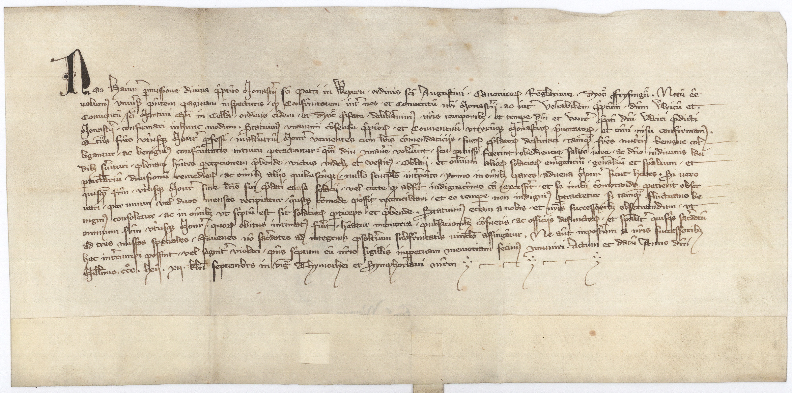

BayHStA, Kloster Dietramszell Urkunden, 28



Kommentar
Editor: katharina.wolff@textgrid.de
Archiv: BayHStA
Bestand: Kloster Dietramszell Urkunden
Signatur: 28
Ort: unbekannt
Datum: 1362 August 21
Schlagwort: Urkunde
Schwierigkeitsgrad: mittel
Kurzbetreff:
Gebetsverbrüderung
Gebetsverbrüderung
Schreiberhände:
- unbekannter Schreiber (S1)
Kommentar:
Gebetsverbrüderung zwischen den Augustinerchorherrenstiften St. Peter in Weyarn und St. Martin in Dietramszell. Dabei werden Vereinbarungen getroffen, betreffend die gegenseitige Aufnahme von Professen des einen im jeweils anderen Kloster, sofern diese ein Empfehlungsschreiben vorweisen können. Zudem soll die memoria verstorbener Brüder nach erfolgter Todesanzeige mit drei besonderen Messen, im Fall von jugendlichen, noch nicht zum Priester geweihten Brüdern, mit dem gesamten Psalter begangen werden.
Die Schrift bewegt sich zwischen der gotischen Kursive (segelförmige Schlaufen bei z.B. l und b, doppelstöckiges a) und der Bastarda (zahlreiche einzeln stehende Buchstaben, dolchförmige Schäfte bei z.B. s und f). Insgesamt entspricht der Eindruck dem der Klassifizierung "Trecento I" nach Heinemeier (vgl. ).
Als bemerkenswerte Eigenheit des Schreibers darf das M gelten, das aus einer unzialen Schreibweise herrührt, wie z.B. in Zeile 1 in MonasteriiMonasterii.
Der Schreiber verwendet u und v gelegentlich für den jeweils anderen Lautwert (z.B. in Zeile 1 diuina oder in Zeile 2 vniuersis).
Anstelle von -tionis steht hier -cionis, z.B. in Zeile 12 in pulsacionibuspulsacionibus.
Die Schrift ist sehr klar und regelmäßig und weist neben dem erwähnten großen M auch sonst individuell gestaltete gestrichene Großbuchstaben auf.
Die recht sorgfältig geschriebene Urkunde entspricht einem gehobenen Alltagsniveau.
Gebetsverbrüderung zwischen den Augustinerchorherrenstiften St. Peter in Weyarn und St. Martin in Dietramszell. Dabei werden Vereinbarungen getroffen, betreffend die gegenseitige Aufnahme von Professen des einen im jeweils anderen Kloster, sofern diese ein Empfehlungsschreiben vorweisen können. Zudem soll die memoria verstorbener Brüder nach erfolgter Todesanzeige mit drei besonderen Messen, im Fall von jugendlichen, noch nicht zum Priester geweihten Brüdern, mit dem gesamten Psalter begangen werden.
Die Schrift bewegt sich zwischen der gotischen Kursive (segelförmige Schlaufen bei z.B. l und b, doppelstöckiges a) und der Bastarda (zahlreiche einzeln stehende Buchstaben, dolchförmige Schäfte bei z.B. s und f). Insgesamt entspricht der Eindruck dem der Klassifizierung "Trecento I" nach Heinemeier (vgl. ).
Als bemerkenswerte Eigenheit des Schreibers darf das M gelten, das aus einer unzialen Schreibweise herrührt, wie z.B. in Zeile 1 in MonasteriiMonasterii.
Der Schreiber verwendet u und v gelegentlich für den jeweils anderen Lautwert (z.B. in Zeile 1 diuina oder in Zeile 2 vniuersis).
Anstelle von -tionis steht hier -cionis, z.B. in Zeile 12 in pulsacionibuspulsacionibus.
Die Schrift ist sehr klar und regelmäßig und weist neben dem erwähnten großen M auch sonst individuell gestaltete gestrichene Großbuchstaben auf.
Die recht sorgfältig geschriebene Urkunde entspricht einem gehobenen Alltagsniveau.
Entzifferung
(Absatz Beginn)
1
2 Nos Hainr(icus) p(er)missione diuina p(re)p(osi)tus Monast(er)ij s(an)c(t)i petri in Weyern/ ordinis s(an)c(t)i Augustini/ Canonico(rum) Reg(u)larium/ Dyoc(esis) ffrysing(e)n(sis)a) . Notum e(ss)e
3 uolum(us) vniu(er)s(is) p(rese)ntem paginam inspecturis/ q(uod) Confr(ater)nitatem int(er) nos/ et Conuentu(m) n(ost)ri Monast(er)ij. ac int(er) Ven(er)abilem p(re)p(osi)tum/ d(omi)n(u)m lricu(m) et
4 Conuentu(m) s(an)c(t)i Martini E(pisco)pi in Cella/ ordinis ei(us)dem/ et Dyoc(esis) p(re)fate/ delib(er)auim(us) n(ost)ris temporib(us)/ et temp(or)e d(omi)ni et Ven(e)r(abilis) p(re)p(osi)ti d(omi)ni Vlrici p(re)dicti
5 Monast(er)ij/ confirmari in hunc modum. Statuim(us) vnanimi co(n)sensu p(re)p(osi)to(rum)/ et Conuentuu(m) vtroru(m)q(ue) Monast(er)io(rum) p(re)notato(rum)/ et om(n)i nisu confirmam(us).
6 Q(ua)t(e)n(u)s f(rat)res vt(r)iusq(ue) Mon(aste)r(ii) p(ro)fessi/ in alt(er)utru(m) Mon(aste)r(ium) venientes cum l(itte)ris co(m)mendaticijs/ suo(rum) p(re)lato(rum) destinati/ tamq(uam) fr(at)res nut(r)icij benigne col-
7 ligantur/ ac benigni(us) confr(ater)nitatis intuitu p(er)tractentur. q(ua)m diu (com)man(er)e volu(er)int/ seu p(er)missi fuerint/ obediencie/ saluo iure/ ac d(omi)no in diuinis lau-
8 dib(us) s(er)uituri, plenam h(abe)ntes p(er)cepcionem p(re)bende/ victus videl(icet) et vestit(us) "Oblaij"/ et om(n)ium alio(rum) solacio(rum) em(er)genciu(m)/ gen(er)aliu(m) et sp(iritu)alium/ et
9 p(ar)tic(u)lariu(m)/ diuisionu(m) remedio(rum)/ ac om(n)ib(us) alijs quibuscu(m)q(ue)/ nullo scurp(u)lob) int(er)po(s)ito/ ymmo in om(n)ib(us) pares/ aduena Mon(aste)r(ium) sicut heres. Si uero
10 quisq(uam) fr(atru)m/ vt(r)iusq(ue) Mon(aste)r(ii) sine l(itte)ris sui p(re)lati causa solacij vel certe q(uod) absit indignac(io)nis ca(usa) excess(er)it/ et se inibi com(m)orande perierit obser-
11 uari/ per unum/ vel duos menses recipiatur/ q(u)osq(ue) co(m)mode possit reconciliari/ et eo temp(or)e non indigni(us) (per)tractetur s(ed) tamq(uam) fluctuans be-
12 nigni(us) consoletur/ ac in om(n)ib(us) vt sc(r)iptu(m) est sit solacio(rum) p(ar)ticeps/ et p(re)bende. Statuim(us) eciam a nobis/ et n(ost)ris successorib(us) obseruandum/ vt
13 omnium fr(atru)m vt(ri)usq(ue) Mo(naste)r(ii) quo(rum) obitus intimat(us) fu(er)it/ h(ab)eatur memoria/ pulsacionib(us) co(n)suetis/ ac officÿs defuncto(rum)/ et sp(iritu)alit(er) quisq(u)is sac(er)dotu(m)
14 ad tres missas speciales/ Iuuenes no(n) sac(er)dotes ad integrum psalt(er)ium subfr(ater)nitatis uinc(u)lo affinga(n)tur. Ne aut(em) in post(er)um a n(ost)ris successorib(us)
15 hec int(er)rumpi possint/ vel segnit(er) violari/ p(e)n(e)s sc(ri)ptum cu(m) n(ost)ris sigillis in p(er)petuam memoriam fecim(us) (com)muniri. Actum et datu(m) Anno d(omi)ni
16 Mill(es)imo. ccco. lxijo. xij. k(a)l(e)n(das) septembr(i)s in vig(ilia) Thymothei et Symphoriani m(arty)r(u)mc)
(Absatz Ende)
a) hier steht "ffrisingn"(Textzitat), vermutlich soll es "ffrisingensis"(Textzitat) lauten
b) sollte wohl "scrupulo"(Textzitat) lauten, "u"(Textzitat)u und "r"(Textzitat) wurden vertauscht
c) es folgen Zierelemente, die anzeigen sollen, dass der Text hier zu Ende ist
Transkription
(Absatz Beginn)
1
2 Nos Hainricus permissione divina propositus monasterii sancti Petri in Weyern, ordinis sancti Augustini, canonicorum regularium, diocesis Frisingensisa) . Notum esse
3 volumus universis presentem paginam inspecturis, quod confraternitatem inter nos, et conventum nostri monasterii, ac inter venerabilem propositum, dominum lricum et
4 conventum sancti Martini episcopi in Cella, ordinis eiusdem, et diocesis prefate, deliberavimus nostris temporibus, et tempore domini et venerabilis prepositi domini Ulrici predicti
5 monasterii, confirmari in hunc modum. Statuimus unanimi consensu prepositorum, et conventum utrotumque monasteriorum prenotatorum, et omni nisu confirmamus.
6 Quatenus fratres utriusque monasterii professi, in alterutrum monasterium venientes cum habens commendaticiis, suorum prelatorum destinati, tamquam fratres nutricii benigne col-
7 ligantur, ac benignius confraternitatis intuitu pertractentur, quam diu commanere voluerint, seu premissi fuerint, obediencie, salvo iure, ac domino in divinis lau-
8 dibus servituri, plenam habentes perceptionem prebende, victus videlicet et vestitus "Oblay", et omnium aliorum solaciorum emergencium, generalium et spiritualium, et
9 particularium, divisionum remediorum, ac omnibusque aliis quibuscumque, nullo scrupulob) interposito, immo in omnibus pares, advena monasterium sicut heres. Si vero
10 quisquam fratrum, utriusque monasterium line litteris sui prelati causa solacii vel certe quod absit indignacionis causa excesserit, et se inibi commorande petierit obser-
11 vari, per unum, vel duos menses recipiatur, quosque commode possit reconciliari, et eo tempore non indignius pertractetur sed tamquam fluctuans ba-
12 nignius consoletur, ac in omnibus ut scriptum est sit solaciorum particeps, et prebende. Statuimus etiam a nobis, et nostris successoribus observandum, ut
13 omnium fratrum utriusque monasteriorum quorum obitus intimatus fuerit, habeatur memoria, pulsacionibus consuetis, ac officiis defunctorum, et spiritualiter quisquis sacerdotum
14 ad tres missas speciales, iuvenes non sacerdotes ad integrum psalterium subfraternitatis vinculo affigantur. Ne autem impositum a nostris successoribus
15 hec interrumpi possint, vel segnitur violari, penes scriptum cum nostris sigillis in perpetuam memoriam fecimus communiri. Actum et datum anno domini
16 millesimo CCCo. LXIIo. XII. kalendas Septembris in vigilia Timothei et Symphoriani martyrumc)
(Absatz Ende)
a) hier steht "ffrisingn"(Textzitat), vermutlich soll es "ffrisingensis"(Textzitat) lauten
b) sollte wohl "scrupulo"(Textzitat) lauten, "u"(Textzitat)u und "r"(Textzitat) wurden vertauscht
c) es folgen Zierelemente, die anzeigen sollen, dass der Text hier zu Ende ist